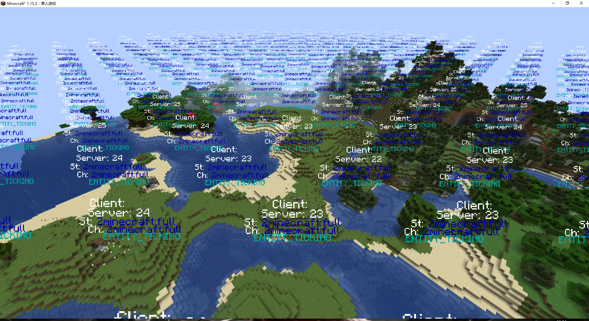

Minecraft 在 1.14 引入了 Ticket 系统来管理区块的加载和卸载。
本文采用 Minecraft 1.15.2，MCP 的 20200904-1.15.1 映射表写就。
让我们开始吧。
有一日，一名玩家百无聊赖下，在 Minecraft 中开始了一次新的冒险，于是万物伊始。

这个界面，是新的区块加载方式最为直观的体现，稍后我们就会讲解这些颜色对应着什么。
在 Minecraft 1.14 中，Mojang 引入了 Ticket 用于管理区块是否、何时加载，而一个 Ticket 由以下属性组成：
- 一个
net.minecraft.world.server.TicketType，用于表示这个 Ticket 的种类；种类指定了它的存活时间lifespan，单位是游戏刻； - 一个加载等级
level，用于加载周围区块的距离。
加载等级 Level
相信这篇文章的读者，对于区块加载可能有一个感性的认识。
出生点的区块总是加载，而且范围较大，可能有十多个区块；玩家周围一段距离的区块总是加载，看起来和 view-distance 视距有关。
实际上，这些加载的距离由加载等级指定。
游戏中，区块的加载等级以 33 为界，分为四种区块位置类型（net.minecraft.world.server.ChunkHolder.LocationType）：
- 大于 33 的加载等级
INACCESSIBLE不会让区块加载入内存，但世界生成会进行 - 33 的加载等级称为
BORDER，仅有少量游戏逻辑会运行 - 32 为
TICKING，除了对生物进行 tick 以外，大部分逻辑都会运行 - 31 以下为
ENTITY_TICKING，意思是什么想必不需要多说
游戏内与加载等级对应的是加载距离，算法是 distance = 33 - level，表达的字面意思就是「加载周围的多少个方块」；由于地形生成的存在，实际的加载距离会大于指定的距离。
加载等级最大是 44，至于为什么是这个数字，我们一会儿再说。
可以见得，Ticket 的加载等级越低，就会加载更大范围的区块，而区块的加载等级越低，区块进行的计算就会越多，而读者你这时说不定已经猜出了区块的加载计算规则了。
等级扩散 Level Propagation
当一个 Ticket 被提供给某个区块后，它会向周围的八个区块扩散，加载等级逐渐上升。这个过程被称为 Propagation。
假设我们往某一个区块提供了一个加载等级为 30 的 Ticket，那么这一片本身全部为 44 的区域，会变成这样：
33 33 33 33 33 33 33
33 32 32 32 32 32 33
33 32 31 31 31 32 33
33 32 31 30 31 32 33
33 32 31 31 31 32 33
33 32 32 32 32 32 33
33 33 33 33 33 33 33 而等级换算成对应的区块位置类型，游戏就会按照规则计算区块中的活动。
上面的内容足以描述游戏中的区块加载与卸载，但是对世界生成仍然不能清晰的描述：
- 区块生成一定是比玩家的视距更远的，也就是说，
INACCESSIBLE等级的区块仍需更加细分。 - 熟悉 Mod 开发的读者可能会知道，
IWorld接口的实现会有两个，分别是World和WorldGenRegion，也就是说，世界生成和游戏运行的世界有一定差距，以至于需要使用两个实现来描述。 - 类似的，
IChunk的主要实现同样有两个。
所以我们可以挖深一些。
区块状态 ChunkStatus
在 Minecraft 中，区块的实现有两种，分别是 ChunkPrimer 和 Chunk，或者可以称呼为 PROTOCHUNK 和 LEVELCHUNK。
前者用于世界生成，而后者用于正常的游戏逻辑。
Minecraft 的世界生成是分阶段的，我们可以想象，游戏先生成了地形，然后放置树，接着…. 区块状态用于表示，在区块完成生成之前的状态。
游戏中共有 13 种区块状态：
| 状态 | 颜色 | 用途 |
|---|---|---|
| empty | #545454 | 表达一个空的区块 |
| structure_starts | #999999 | 计算生成结构的位置 |
| structure_references | #5F6191 | 保存上一步生成的结构位置 |
| biomes | #80B252 | 生成生物群系并将它们保存 |
| noise | #D1D1D1 | 生成世界的基础地形，包括之前的结构 |
| surface | #726809 | 生成地形的表面，以及基岩 |
| carvers | #6D665C | 「凿空」地形，也就是生成洞穴 |
| liquid_carvers | #303572 | 如上，不过是用液体凿空 |
| features | #21C600 | 进行地形生成的 decoration 阶段 |
| light | #CCCCCC | 计算区块的光照 |
| spawn | #F26060 | 为区块生成最初的一些生物 |
| heightmaps | #EEEEEE | 看起来什么也没做 |
| full | #FFFFFF | 区块加载完成，从 PROTOCHUNK 转换为 LEVELCHUNK |
这些区块状态对应了世界生成的过程，同时它们按照表中的顺序排列；同时，它们各自依赖前一个状态，也就是说，我们请求一个 full 的区块时，这个区块的状态会依次经过 empty, structure_starts …
以下是在 33 以上的加载等级对应的区块状态：
| 加载等级 | ChunkStatus |
|---|---|
| 33- | full |
| 34 | features |
| 35 | liquid_carvers |
| 36-43 | structure_starts |
| 44+ | empty |
可以看到，Minecraft 并不是沿着加载等级依次排列区块状态的，因此在世界加载时，颜色的显示就并没有那么五彩斑斓了，不过如果愿意，我们仍然可以在这里观察到若干种颜色。
可以看到，右边多出来的那三个区块，从上到下分别处于 liquid_carvers, surface 和 biomes 阶段。
Ticket 种类
Minecraft 中共有 8 种 net.minecraft.world.server.TicketType，它们分别是
start，用于出生点区块的加载，加载距离是 11 格，也就是 22 加载等级；由 43-22 得到 21，因此出生点的这个 Ticket 会在加载世界时一共加载 441 个区块
世界生成初始时会注册该 Ticket，世界加载的界面反应了该 Ticket 对区块造成的变化dragon，在与末影龙战斗时提供给区块，加载 9 格距离player，自然就是玩家加载区块的方法，加载等级 31- 读者可能会问，玩家显然加载不止两格区块。实际上游戏会将玩家周围一段距离内的区块全部添加这个 Ticket，而这个距离与
view-distance（服务器）或渲染距离（客户端）有关
- 读者可能会问，玩家显然加载不止两格区块。实际上游戏会将玩家周围一段距离内的区块全部添加这个 Ticket，而这个距离与
forced，用于/forceload指令和出生点区块的强制加载light，加载等级 34，在区块状态为light时提供给区块，将区块加载以便计算光照portal，在生成或寻找（这也就包含了生物使用传送门）对应的传送门后提供给区块，加载距离 3，存活 300 游戏刻post_teleport，将生物传送到对应区块后，将区块保持加载一小段时间（5 gt），这可以让/tp指令传送生物后，使生物有机会更新到达的区块unknown，用于游戏内任意代码调用了getChunk后加载区块，比如getBlockState，使区块加载 1 游戏刻以便获取区块信息
需要注意的是，加载距离并不由 TicketType 指定，比如 post_teleport 在 /tp 指令使用时加载距离为 1，而其他情况下为 0
屁话多！如何使用？
为世界的某个区块添加一个 Ticket 是再简单不过的事：
import net.minecraft.world.server.TicketType;
this.world.getChunkProvider().registerTicket(
TicketType.DRAGON, new ChunkPos(0, 0), 9, Unit.INSTANCE
);或许不限于原版的 TicketType，那么可以自行注册一个：
import net.minecraft.world.server.TicketType;
public static final TicketType<Unit> CUSTOM =
TicketType.create("some_ticket", (a, b) -> 0, 20 /* 可选的存活时间 */);顺便一提，Unit 是 Mojang 的工具类，用来表示单元值，姑且可以理解为 void。
还值得一提的是，加入游戏的 Ticket 是不持久化的，也就是说它们会随着游戏重启而消失。
Bukkit 平台提供了另外两种 TicketType，看起来是这样的：
public static final TicketType<Unit> PLUGIN =
create("plugin", (a, b) -> 0);
public static final TicketType<org.bukkit.plugin.Plugin> PLUGIN_TICKET =
create("plugin_ticket", (a, b) -> a.getClass().getName().compareTo(b.getClass().getName()));前一种用于实现高版本的 chunk-gc.period-in-ticks 设置，具体细节就不过多说明了。
后一种则是提供给插件的，用于强制加载区块的方法，具体的 API 可以如下调用：
World world = Bukkit.getWorld("...");
world.addPluginTicket(chunkX, chunkZ, plugin);这会给对应区块一个加载等级 31 的 Ticket，以防止区块被卸载。
其他
Mojang 实际上提供了一套显示世界区块的加载等级和位置类型的渲染器，不过不能通过游戏内的方式启用，可以手动调用 net.minecraft.client.renderer.debug.ChunkInfoDebugRenderer 来渲染。

由此图可以轻松找到加载等级 22 的区块为我们需要的加载区块。
由于玩家会加载区块，因此我们需要设置游戏规则 /gamerule spectatorsGenerateChunks false，同时切换到旁观者模式，以阻止玩家自身的 Ticket。
由此可以看到一个 Ticket 的加载边界，位置等级逐渐降低。
关于谁加载了区块
其实本文到此本应结束了，但是在举办 TeaCon 2020 时，我们正好遇到了和这篇文章或许扯得上关系的一件事，因此一并在此记下。
事件的经过可以查看 sj 博客的这篇文章。
攻击刚刚开始时，我们发现服务器卡死，线程转储指向了 Chunk IO Worker，也就是说区块加载卡住了。同时世界文件夹中出现了大量数值特别大的 .mca 文件，因此可以判定有人在恶意利用漏洞加载区块。
但是 Forge 提供的加载区块事件是在 Chunk IO Worker 上调用的，因此异常栈信息并不能告诉我们是谁请求了这次区块加载。
经过研究发现，区块的加载等级更新逻辑位于 ChunkHolder#processUpdates，并且是同步调用的，因此假如可以在这里设置一个断点，那么就可以找到哪些逻辑在加载区块了。
protected void processUpdates(ChunkManager chunkManagerIn) {
ChunkStatus chunkstatus = getChunkStatusFromLevel(this.prevChunkLevel);
ChunkStatus chunkstatus1 = getChunkStatusFromLevel(this.chunkLevel);
boolean flag = this.prevChunkLevel <= ChunkManager.MAX_LOADED_LEVEL;
boolean flag1 = this.chunkLevel <= ChunkManager.MAX_LOADED_LEVEL;
ChunkHolder.LocationType chunkholder$locationtype = getLocationTypeFromLevel(this.prevChunkLevel);
ChunkHolder.LocationType chunkholder$locationtype1 = getLocationTypeFromLevel(this.chunkLevel);
if (flag) {
// unload
}
boolean flag5 = chunkholder$locationtype.isAtLeast(ChunkHolder.LocationType.BORDER);
boolean flag6 = chunkholder$locationtype1.isAtLeast(ChunkHolder.LocationType.BORDER);
this.accessible |= flag6;
if (!flag5 && flag6) {
this.borderFuture = chunkManagerIn.func_222961_b(this);
this.chain(this.borderFuture);
}
if (flag5 && !flag6) {
// unload
}
boolean flag7 = chunkholder$locationtype.isAtLeast(ChunkHolder.LocationType.TICKING);
boolean flag2 = chunkholder$locationtype1.isAtLeast(ChunkHolder.LocationType.TICKING);
if (!flag7 && flag2) {
this.tickingFuture = chunkManagerIn.func_219179_a(this);
this.chain(this.tickingFuture);
}
if (flag7 && !flag2) {
// unload
}
boolean flag3 = chunkholder$locationtype.isAtLeast(ChunkHolder.LocationType.ENTITY_TICKING);
boolean flag4 = chunkholder$locationtype1.isAtLeast(ChunkHolder.LocationType.ENTITY_TICKING);
if (!flag3 && flag4) {
if (this.entityTickingFuture != UNLOADED_CHUNK_FUTURE) {
throw (IllegalStateException)Util.pauseDevMode(new IllegalStateException());
}
this.entityTickingFuture = chunkManagerIn.func_219188_b(this.pos);
this.chain(this.entityTickingFuture);
}
if (flag3 && !flag4) {
// unload
}
this.field_219327_v.func_219066_a(this.pos, this::func_219281_j, this.chunkLevel, this::func_219275_d);
this.prevChunkLevel = this.chunkLevel;
}这个方法在区块的加载等级变化后，更新了 prevChunkLevel 的值，同时向区块安排任务。
前文讲到，在调用 getBlockState 一类的方法时，游戏会为没有加载的区块提供一个 unknown 的 Ticket，因此这类方法调用如果加载了区块，就应该会反应在这个方法。
接下来就简单了，在这里打一个断点，输出一下堆栈信息，轻松的就发现了 TheOneProbe 的漏洞。
总结
区块加载系统在 1.14 迎来了较大的变化，Mojang 以一种更加合理的方式来管理区块，大部分老版本用于卸载不需要的区块的服务端插件也逐渐退出了历史舞台。
如果你对世界生成中的区块生成有兴趣，可以查看 Yaossg 的这篇文章，尽管是 1.13 的，但是仍然有价值一读。
同时 Yaossg 对世界生成的过程也做了较为详细的解释，具体可以查看这个仓库。
官方 Wiki 中的区块一节也对这个系统进行了一定的讲解，尽管 Wiki 会更注重游戏细节而非技术细节。
感谢最初介绍这个系统的 Drovolon，以及他的文章。官方 Wiki 大部分内容来源于此。